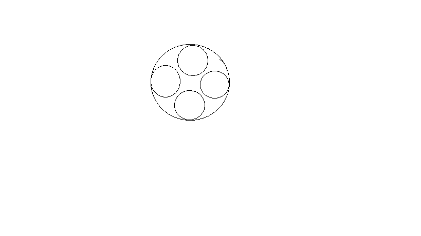

Để chuẩn bị cho bữa tiệc tất niên sắp tới, Hoàn muốn lựa chọn một chiếc bàn tròn phù hợp để trưng bày n đĩa thức ăn hình tròn có cùng bán kính lên đó. Biết rằng một chiếc bàn tròn phù hợp khi ta có thể đặt n đĩa thức ăn lên trên bàn sao cho mọi đĩa thức ăn phải nằm trọn bên trên mặt bàn, cạnh của các đĩa phải tiếp xúc với phần rìa của mặt bàn và không có hai đĩa thức ăn nào bị chồng lên nhau, và các đĩa xếp sát nhau vẫn được chấp nhận. Cho biết số lượng đĩa thức ăn, bán kính của một đĩa thức ăn và bán kính của chiếc bàn, nhiệm vụ của bạn là phải xác định xem chiếc bàn đó có phù hợp để Hoàn trưng bày hết các đĩa thức ăn hay không.
Input
Một dòng chứa 3 số nguyên n, R và r (1 <= n <= 100, 1 <= r, R <= 1000) lần lượt là số đĩa thức ăn, bán kính của chiếc bàn và bán kính của một đĩa thức ăn.
Output
Nếu chiếc bàn Hoàn chọn là phù hợp, in ra YES, ngược lại in ra NO
Giải thích ví dụ
Các đĩa có thể được sắp xếp theo hình dưới đây (hình ảnh chỉ mang tính chất minh họa)
